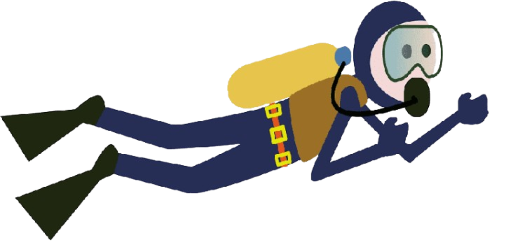
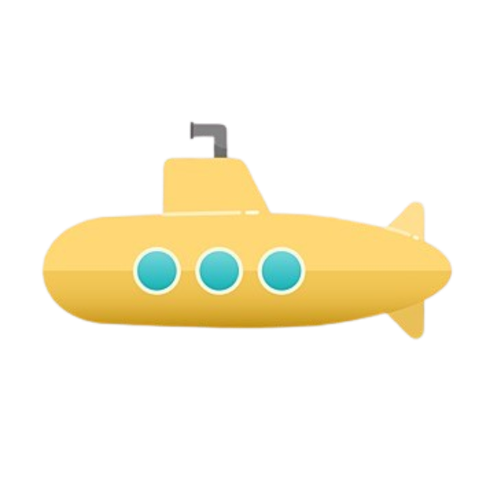
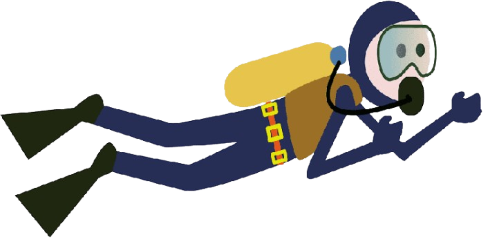
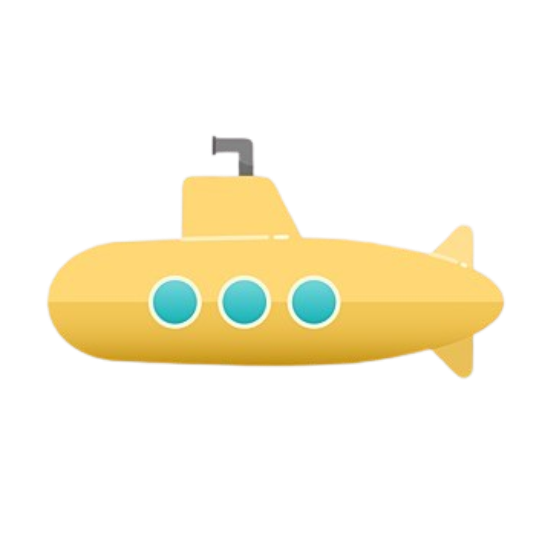

"Embrace the Thrill of"
Exploration


 Explore
Explore


 Explore
Explore


The ocean is a vast, mysterious world covering over 70% of our planet. While its surface may appear serene, beneath lies a realm brimming with life, secrets, and wonders. Ancient shipwrecks, vibrant coral reefs, and species yet to be discovered all tell tales of survival, evolution, and hidden mysteries. The interplay of light and shadow, coupled with the vast biodiversity, creates an underwater world that captivates scientists and dreamers alike.
This vast blue expanse operates on principles similar to the natural phenomenon of parallax. Close objects, like fish weaving through coral, seem larger and move faster, while distant underwater mountains and schools of fish appear to glide slowly. This dynamic perspective adds to the mesmerizing experience of exploring the deep. From myths of sea monsters to modern submarines and scuba diving, humanity’s fascination with the ocean continues to grow, revealing ruins of ancient civilizations and life forms uniquely adapted to extreme environments.
The ocean is a time capsule, preserving remnants of the past. Sunken ships, lost cities, and forgotten artifacts rest undisturbed in its depths. These relics tell stories of trade routes, naval battles, and civilizations that once thrived near the shore.
The ocean is home to millions of species, many of which are yet to be discovered. From vibrant coral reefs to the pitch-black abyss of the deep sea, each zone offers unique ecosystems where life thrives in unexpected ways. Exploring the ocean brings us closer to understanding the diversity and resilience of life on Earth.
To explore the ocean effectively, choose the right tools. Submarines allow scientists to delve into the deep sea, while scuba diving gear offers an up-close encounter with marine life. High-resolution cameras and drones can also capture breathtaking visuals of underwater landscapes.
As explorers, it's essential to minimize harm to the environment. Avoid disturbing marine habitats or touching coral reefs, as these ecosystems are fragile and slow to recover.
Exploring the ocean isn't just about visuals—it’s an immersive experience. The way light dances through water, the stillness of the deep, and the occasional appearance of curious fish create moments of awe and inspiration.
 


